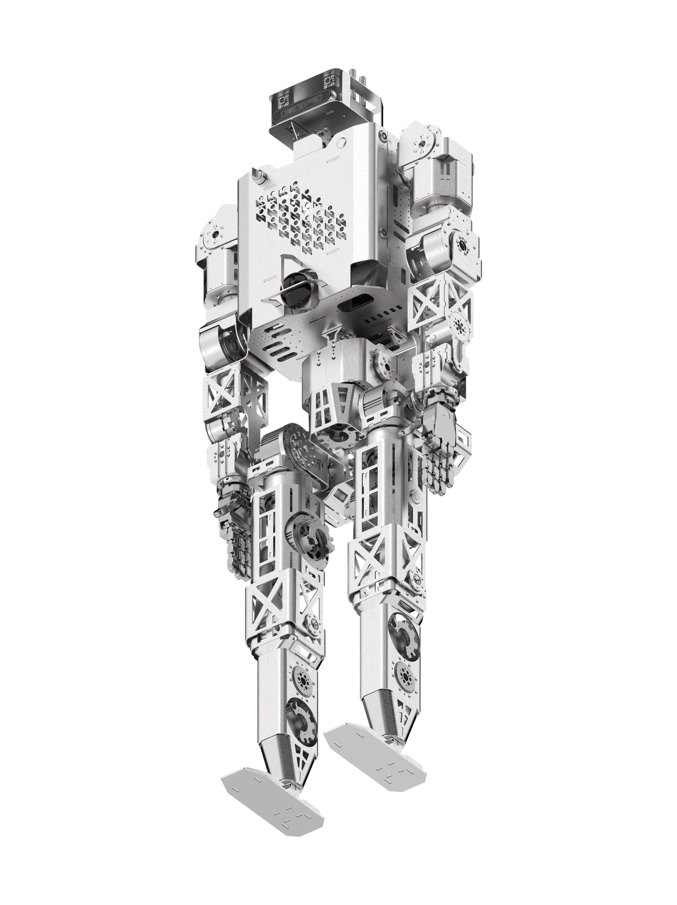

Roger
A humanoid robot from the United States.
Sources retrieved: 8 October 2026 (A)
- Applications
- Indicative price
- Not stated
- Intended use, per the manufacturer
- Remotely deployed into high-risk situations, such as a toxic gas alarm, a leak, or a fire watch. Gauges read, corrosion tracked, anomalies flagged before they become incidents.Source and note: Intended use, per the manufacturerA minervahumanoids.com · Retrieved 8 October 2026

Manufacturer's rendering.
Specifications
1/33 specifications disclosed 32 not stated
32 fields hidden
How to read the figuresShow guideClose
Not statedThe manufacturer states nothing about this field.NoStated: the robot does not have this.A marker with an asterisk (*) also carries a caveat.
Select a source marker for source details and notes.
Physical1/14 disclosed
Power0/5 disclosed
Sensing and autonomy0/6 disclosed
Payload and expansion0/3 disclosed
Commercial0/1 disclosed
Compliance & certifications0/4 disclosed
Against the field
Each strip holds every robot of this type in the guide that states the figure, one bar per group of values. Further right means a larger figure, not a better robot.
Weight
less than 100kgless than 220lbOur conversion from 100 kg. The manufacturer does not state an imperial figure itself, so the conversion has no source of its own.
126 humanoids state a weight
Roger states an upper limit, not one figure, so it is shown open-ended and not ranked against the others. Log scale: each step along the axis multiplies the value.
Notes
Minerva Humanoids says it turns the world's most dangerous jobs into safer, reliable and predictable operations, and its site presents Roger as its robot.
Roger is teleoperated: its cameras send the view to an operator's headset, trackers on the operator's body send motion to the robot, and haptic feedback returns contact information, according to the producer.
Minerva went from an idea to a walking humanoid in five months, and its first Roger prototypes are built in Germany, according to thenextweb.com.
Minerva's own control software handles balance, navigation and recovery from falls, according to interestingengineering.com.
New funding brings Minerva Humanoids out of stealth, according to thenextweb.com.
Sources
One line per source, not per figure: a source has one retrieval date.
- Aminervahumanoids.comMain source. Retrieved 8 October 2026